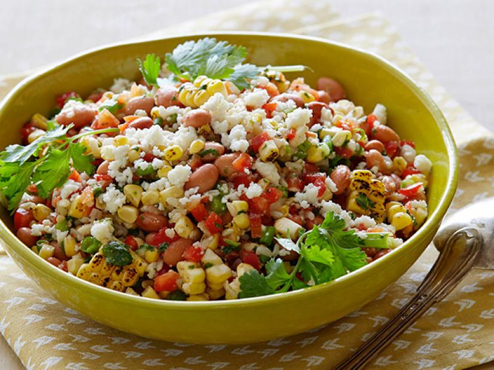

Rice Salad

Description
Rice salad is such a good meal for the summer, it'll make your mouth salivate by just looking at it
Hope you enjoy this as much as I did! Because this meal will fill up!
Ingredients
- 2 cups of water
- 1 cup white rice
- 6 eggs
- 1(10 ounce) package frozen peas, thawed
- 1 cup chopped celery
- ¼ cup chopped onion
- 1 (4 ounce) jar diced pimento
- 1 cup mayonnaise
- 1 teaspoon prepared mustard
- 1 tablespoon lemon juice
- ¼ cup sweet pickle relish
- 1 (9 ounce) can solid white tuna packed in water, drained
- ¼ teaspoon dried dill weed
- 1 teaspoon salt
- ⅛ teaspoon pepper
Steps
- In a saucepan bring water to a boil. Add rice and stir. Reduce heat, cover and simmer for 20 minutes. Remove from heat, and set aside to cool.
- Place eggs in a saucepan and cover with cold water. Bring to a boil and immediately remove from heat. Cover and let eggs stand in hot water for 10 to 12 minutes. Remove from hot water, cool, peel and chop.
- Rinse frozen peas under cold water. Strain, and place in a large mixing bowl. Add eggs, rice, celery, onions, and pimiento; toss to combine, and set aside. In a separate bowl, stir the mayonnaise together with mustard, lemon juice, relish, tuna, dill, salt, and pepper until well blended. Add to the vegetable mixture, and toss to combine. Cover, and refrigerate for a minimum of 4 hours. Toss once more before serving. Serve chilled.